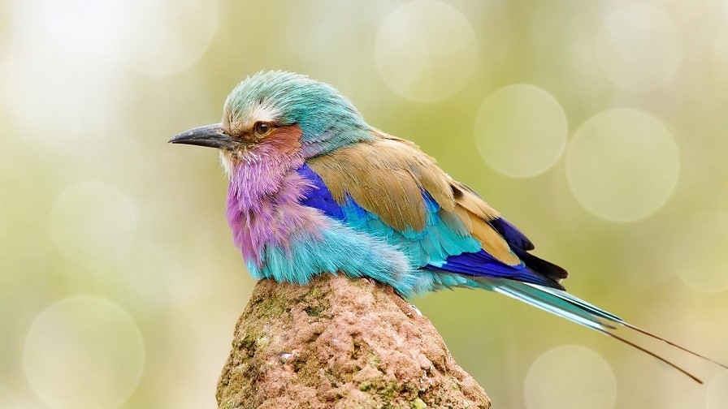

Blue Bird
Bluebirds are territorial and prefer open grassland with scattered trees. This is similar to the behavior of many species of woodpeckers.
Bluebirds can typically produce between two and four broods during the spring and summer (March through August in the Northeastern United States).
Males identify potential nest sites and try to attract prospective female mates to those nesting sites with special behaviors that include singing and flapping wings, and then placing some material in a nesting box or cavity. If the female accepts the male and the nesting site, she alone builds the nest and incubates the eggs. Predators of young bluebirds in the nests can include snakes, cats, and raccoons.